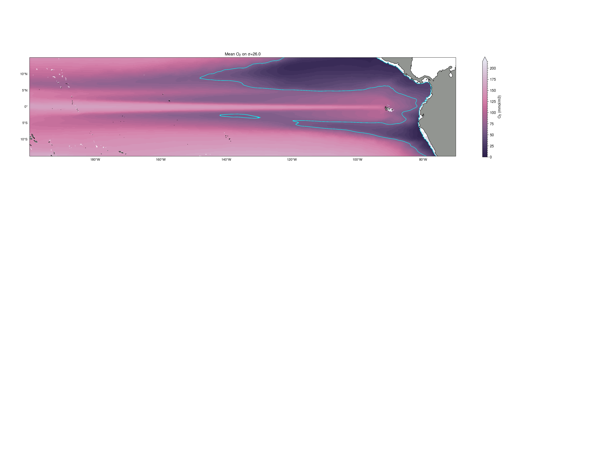
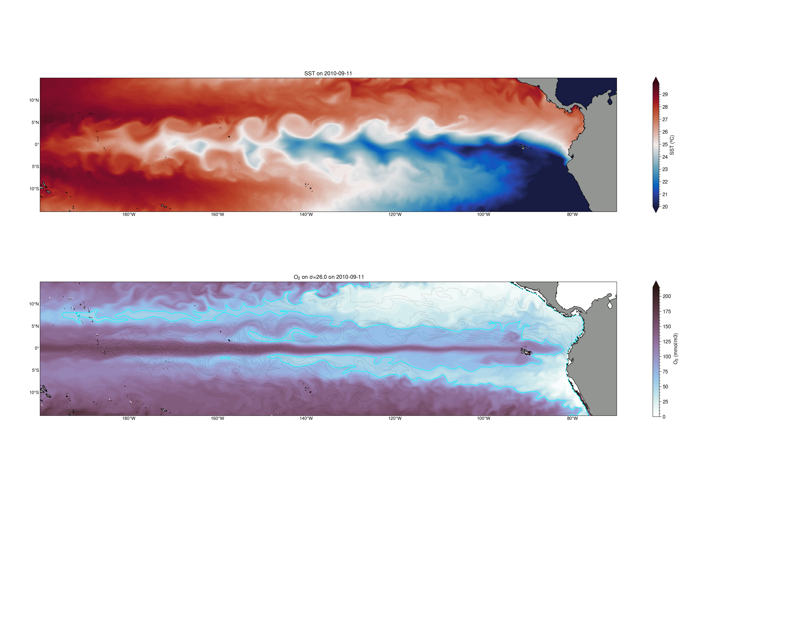
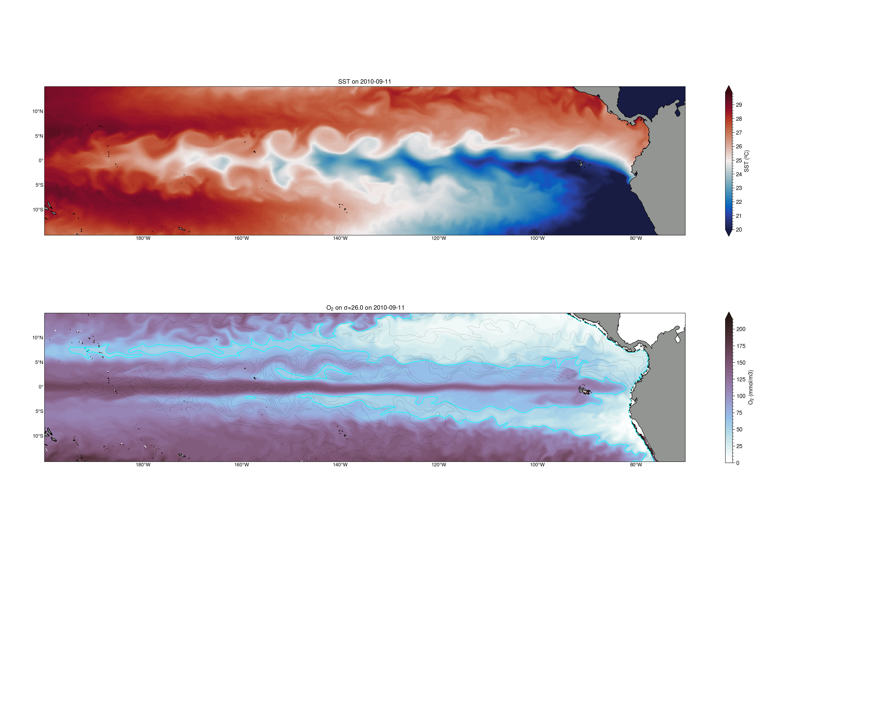

Spin up Dask Cluster/Client
Contents
This notebook analyzes the O\(_2\) budget from MITgcm+BLING output. Dissolved oxygen in the ocean’s interior is simulated following:
\[
\frac{\partial{O_2}}{\partial{t}}= \underbrace{- \frac{\partial{U.O_2}}{\partial{x}} -\frac{\partial{V.O_2}}{\partial{y}}}_\text{Lateral Advection}
- \overbrace{\frac{\partial{W.O_2}}{\partial{z}}}^\text{Vertical Advection}
+ \underbrace{A_h.\nabla^2{O_2}}_\text{Lateral Mixing}
+\overbrace{\frac{\partial{}}{\partial{z}}k.\frac{\partial{O_2}}{\partial{z}}}^\text{Vertical Mixing}
+ \underbrace{ J(O_2) }_\text{Sources - Sinks}
\]
%load_ext autoreload
%autoreload 2
%matplotlib inline
import warnings
warnings.simplefilter("ignore") # Silence warnings
import xarray as xr
import numpy as np
from tqdm import tqdm
import matplotlib.colors as colors
import matplotlib.ticker as mticker
import matplotlib.patches as patches
import cmocean
import cartopy
import cartopy.crs as ccrs
from cartopy import util
from cartopy.mpl.gridliner import LONGITUDE_FORMATTER, LATITUDE_FORMATTER
import cartopy.feature as cft
import proplot
# from xmovie import *
import matplotlib.pyplot as plt
from utils import *
from xgcm import Grid
plt.rcParams["figure.facecolor"] = 'white'
Spin up Dask Cluster/Client#
C=CLSTR(1,15,109,36)
C
Client
Client-dfd2d731-e13d-11ec-98ca-3cecef1b11e8
| Connection method: Cluster object | Cluster type: dask_jobqueue.PBSCluster |
| Dashboard: https://jupyterhub.hpc.ucar.edu/stable/user/yeddebba/proxy/41873/status |
Cluster Info
PBSCluster
230ddd88
| Dashboard: https://jupyterhub.hpc.ucar.edu/stable/user/yeddebba/proxy/41873/status | Workers: 0 |
| Total threads: 0 | Total memory: 0 B |
Scheduler Info
Scheduler
Scheduler-7514f91b-29c9-4c01-a60c-c99509ad07af
| Comm: tcp://10.12.206.49:46837 | Workers: 0 |
| Dashboard: https://jupyterhub.hpc.ucar.edu/stable/user/yeddebba/proxy/41873/status | Total threads: 0 |
| Started: Just now | Total memory: 0 B |
Workers
ds=xr.open_mfdataset('/glade/work/klindsay/cesm_inputdata/ecosys_jan_IC_omip_POP_tx0.1v3_c200423.nc')
ds
<xarray.Dataset>
Dimensions: (z_t: 62, nlat: 2400, nlon: 3600, d2: 2, z_w: 62, z_w_bot: 62)
Coordinates:
TLAT (nlat, nlon) float64 dask.array<chunksize=(2400, 3600), meta=np.ndarray>
TLONG (nlat, nlon) float64 dask.array<chunksize=(2400, 3600), meta=np.ndarray>
* z_t (z_t) float64 500.0 1.5e+03 2.5e+03 ... 5.625e+05 5.875e+05
* z_w (z_w) float64 0.0 1e+03 2e+03 ... 5.25e+05 5.5e+05 5.75e+05
* z_w_bot (z_w_bot) float64 1e+03 2e+03 3e+03 ... 5.5e+05 5.75e+05 6e+05
Dimensions without coordinates: nlat, nlon, d2
Data variables: (12/44)
ALK (z_t, nlat, nlon) float64 dask.array<chunksize=(62, 2400, 3600), meta=np.ndarray>
ALK_ALT_CO2 (z_t, nlat, nlon) float64 dask.array<chunksize=(62, 2400, 3600), meta=np.ndarray>
DIC (z_t, nlat, nlon) float64 dask.array<chunksize=(62, 2400, 3600), meta=np.ndarray>
DIC_ALT_CO2 (z_t, nlat, nlon) float64 dask.array<chunksize=(62, 2400, 3600), meta=np.ndarray>
DOC (z_t, nlat, nlon) float64 dask.array<chunksize=(62, 2400, 3600), meta=np.ndarray>
DOCr (z_t, nlat, nlon) float64 dask.array<chunksize=(62, 2400, 3600), meta=np.ndarray>
... ...
spCaCO3 (z_t, nlat, nlon) float64 dask.array<chunksize=(62, 2400, 3600), meta=np.ndarray>
spChl (z_t, nlat, nlon) float64 dask.array<chunksize=(62, 2400, 3600), meta=np.ndarray>
spFe (z_t, nlat, nlon) float64 dask.array<chunksize=(62, 2400, 3600), meta=np.ndarray>
spP (z_t, nlat, nlon) float64 dask.array<chunksize=(62, 2400, 3600), meta=np.ndarray>
z_t_bounds (z_t, d2) float64 dask.array<chunksize=(62, 2), meta=np.ndarray>
zooC (z_t, nlat, nlon) float64 dask.array<chunksize=(62, 2400, 3600), meta=np.ndarray>
Attributes:
lateral_dims: [2400 3600]
vertical_dims: 62
vert_grid_file: /gpfs/fs1/work/klindsay/analysis/pop-tools/pop_tools/...
horiz_grid_fname: /glade/p/cesmdata/cseg/inputdata/ocn/pop/tx0.1v3/grid...
topography_fname: /glade/p/cesmdata/cseg/inputdata/ocn/pop/tx0.1v3/grid...
region_mask_fname: /glade/p/cesmdata/cseg/inputdata/ocn/pop/tx0.1v3/grid...
type: tripole
title: POP_tx0.1v3 grid
history: Thu Apr 23 15:58:12 2020: ncks -O -5 /glade/work/klin...
input_file_list: /glade/p/cesm/bgcwg/OMIPinit/woa13_temperature_OMIPin...
NCO: netCDF Operators version 4.7.9 (Homepage = http://nco...xarray.Dataset
- z_t: 62
- nlat: 2400
- nlon: 3600
- d2: 2
- z_w: 62
- z_w_bot: 62
- TLAT(nlat, nlon)float64dask.array<chunksize=(2400, 3600), meta=np.ndarray>
- units :
- degrees_north
- long_name :
- T-grid latitude
Array Chunk Bytes 65.92 MiB 65.92 MiB Shape (2400, 3600) (2400, 3600) Count 2 Tasks 1 Chunks Type float64 numpy.ndarray - TLONG(nlat, nlon)float64dask.array<chunksize=(2400, 3600), meta=np.ndarray>
- units :
- degrees_east
- long_name :
- T-grid longitude
Array Chunk Bytes 65.92 MiB 65.92 MiB Shape (2400, 3600) (2400, 3600) Count 2 Tasks 1 Chunks Type float64 numpy.ndarray - z_t(z_t)float64500.0 1.5e+03 ... 5.875e+05
- units :
- cm
- long_name :
- depth from surface to midpoint of layer
- positive :
- down
- bounds :
- z_t_bounds
array([5.000000e+02, 1.500000e+03, 2.500000e+03, 3.500000e+03, 4.500000e+03, 5.500000e+03, 6.500000e+03, 7.500000e+03, 8.500000e+03, 9.500000e+03, 1.050000e+04, 1.150000e+04, 1.250000e+04, 1.350000e+04, 1.450000e+04, 1.550000e+04, 1.650984e+04, 1.754790e+04, 1.862913e+04, 1.976603e+04, 2.097114e+04, 2.225783e+04, 2.364088e+04, 2.513702e+04, 2.676542e+04, 2.854837e+04, 3.051192e+04, 3.268680e+04, 3.510935e+04, 3.782276e+04, 4.087847e+04, 4.433777e+04, 4.827367e+04, 5.277280e+04, 5.793729e+04, 6.388626e+04, 7.075633e+04, 7.870025e+04, 8.788252e+04, 9.847059e+04, 1.106204e+05, 1.244567e+05, 1.400497e+05, 1.573946e+05, 1.764003e+05, 1.968944e+05, 2.186457e+05, 2.413972e+05, 2.649001e+05, 2.889385e+05, 3.133405e+05, 3.379794e+05, 3.627670e+05, 3.876452e+05, 4.125768e+05, 4.375393e+05, 4.625190e+05, 4.875083e+05, 5.125028e+05, 5.375000e+05, 5.624990e+05, 5.874990e+05]) - z_w(z_w)float640.0 1e+03 ... 5.5e+05 5.75e+05
- units :
- cm
- positive :
- down
- long_name :
- depth from surface to top of layer
array([ 0. , 1000. , 2000. , 3000. , 4000. , 5000. , 6000. , 7000. , 8000. , 9000. , 10000. , 11000. , 12000. , 13000. , 14000. , 15000. , 16000. , 17019.6808, 18076.1292, 19182.1243, 20349.9313, 21592.3446, 22923.3124, 24358.4534, 25915.5793, 27615.2589, 29481.4713, 31542.3736, 33831.2257, 36387.4728, 39258.0478, 42498.885 , 46176.6575, 50370.6883, 55174.9119, 60699.6663, 67072.8582, 74439.803 , 82960.6956, 92804.3538, 104136.8196, 117104.0188, 131809.3626, 148290.0716, 166499.2064, 186301.4408, 207487.3978, 229803.9076, 252990.4017, 276809.8509, 301067.0677, 325613.847 , 350344.8607, 375189.1888, 400101.1634, 425052.4544, 450026.0482, 475012.0091, 500004.6829, 525000.927 , 549999.0364, 574999.0364]) - z_w_bot(z_w_bot)float641e+03 2e+03 ... 5.75e+05 6e+05
- units :
- cm
- positive :
- down
- long_name :
- depth from surface to bottom of layer
array([ 1000. , 2000. , 3000. , 4000. , 5000. , 6000. , 7000. , 8000. , 9000. , 10000. , 11000. , 12000. , 13000. , 14000. , 15000. , 16000. , 17019.6808, 18076.1292, 19182.1243, 20349.9313, 21592.3446, 22923.3124, 24358.4534, 25915.5793, 27615.2589, 29481.4713, 31542.3736, 33831.2257, 36387.4728, 39258.0478, 42498.885 , 46176.6575, 50370.6883, 55174.9119, 60699.6663, 67072.8582, 74439.803 , 82960.6956, 92804.3538, 104136.8196, 117104.0188, 131809.3626, 148290.0716, 166499.2064, 186301.4408, 207487.3978, 229803.9076, 252990.4017, 276809.8509, 301067.0677, 325613.847 , 350344.8607, 375189.1888, 400101.1634, 425052.4544, 450026.0482, 475012.0091, 500004.6829, 525000.927 , 549999.0364, 574999.0364, 599999.0364])
- ALK(z_t, nlat, nlon)float64dask.array<chunksize=(62, 2400, 3600), meta=np.ndarray>
- long_name :
- Total alkalinity
- units :
- umol/L
- rho_0 :
- 1.026
Array Chunk Bytes 3.99 GiB 3.99 GiB Shape (62, 2400, 3600) (62, 2400, 3600) Count 2 Tasks 1 Chunks Type float64 numpy.ndarray - ALK_ALT_CO2(z_t, nlat, nlon)float64dask.array<chunksize=(62, 2400, 3600), meta=np.ndarray>
- long_name :
- Total alkalinity
- units :
- umol/L
- rho_0 :
- 1.026
Array Chunk Bytes 3.99 GiB 3.99 GiB Shape (62, 2400, 3600) (62, 2400, 3600) Count 2 Tasks 1 Chunks Type float64 numpy.ndarray - DIC(z_t, nlat, nlon)float64dask.array<chunksize=(62, 2400, 3600), meta=np.ndarray>
- long_name :
- Preindustrial dissolved inorganic carbon
- units :
- umol/L
- rho_0 :
- 1.026
Array Chunk Bytes 3.99 GiB 3.99 GiB Shape (62, 2400, 3600) (62, 2400, 3600) Count 2 Tasks 1 Chunks Type float64 numpy.ndarray - DIC_ALT_CO2(z_t, nlat, nlon)float64dask.array<chunksize=(62, 2400, 3600), meta=np.ndarray>
- long_name :
- Preindustrial dissolved inorganic carbon
- units :
- umol/L
- rho_0 :
- 1.026
Array Chunk Bytes 3.99 GiB 3.99 GiB Shape (62, 2400, 3600) (62, 2400, 3600) Count 2 Tasks 1 Chunks Type float64 numpy.ndarray - DOC(z_t, nlat, nlon)float64dask.array<chunksize=(62, 2400, 3600), meta=np.ndarray>
- long_name :
- Dissolved Organic Carbon at current time
- units :
- mmol/m^3
- grid_loc :
- 3111
- regrid_method :
- bilinear
- history :
- 2020-04-23 15:05:57.453574 esmlab.regrid <regrid>
Array Chunk Bytes 3.99 GiB 3.99 GiB Shape (62, 2400, 3600) (62, 2400, 3600) Count 2 Tasks 1 Chunks Type float64 numpy.ndarray - DOCr(z_t, nlat, nlon)float64dask.array<chunksize=(62, 2400, 3600), meta=np.ndarray>
- long_name :
- Refractory DOC at current time
- units :
- mmol/m^3
- grid_loc :
- 3111
- regrid_method :
- bilinear
- history :
- 2020-04-23 15:11:38.799830 esmlab.regrid <regrid>
Array Chunk Bytes 3.99 GiB 3.99 GiB Shape (62, 2400, 3600) (62, 2400, 3600) Count 2 Tasks 1 Chunks Type float64 numpy.ndarray - DOCtot(z_t, nlat, nlon)float64dask.array<chunksize=(62, 2400, 3600), meta=np.ndarray>
- long_name :
- DOC + DOCr
- units :
- mmol/m^3
- grid_loc :
- 3111
- regrid_method :
- bilinear
- history :
- 2020-04-23 15:05:57.453574 esmlab.regrid <regrid>
Array Chunk Bytes 3.99 GiB 3.99 GiB Shape (62, 2400, 3600) (62, 2400, 3600) Count 2 Tasks 1 Chunks Type float64 numpy.ndarray - DON(z_t, nlat, nlon)float64dask.array<chunksize=(62, 2400, 3600), meta=np.ndarray>
- long_name :
- Dissolved Organic Nitrogen at current time
- units :
- mmol/m^3
- grid_loc :
- 3111
- regrid_method :
- bilinear
- history :
- 2020-04-23 15:15:01.910040 esmlab.regrid <regrid>
Array Chunk Bytes 3.99 GiB 3.99 GiB Shape (62, 2400, 3600) (62, 2400, 3600) Count 2 Tasks 1 Chunks Type float64 numpy.ndarray - DONr(z_t, nlat, nlon)float64dask.array<chunksize=(62, 2400, 3600), meta=np.ndarray>
- long_name :
- Refractory DON at current time
- units :
- mmol/m^3
- grid_loc :
- 3111
- regrid_method :
- bilinear
- history :
- 2020-04-23 15:21:03.794679 esmlab.regrid <regrid>
Array Chunk Bytes 3.99 GiB 3.99 GiB Shape (62, 2400, 3600) (62, 2400, 3600) Count 2 Tasks 1 Chunks Type float64 numpy.ndarray - DOP(z_t, nlat, nlon)float64dask.array<chunksize=(62, 2400, 3600), meta=np.ndarray>
- long_name :
- Dissolved Organic Phosphorus at current time
- units :
- mmol/m^3
- grid_loc :
- 3111
- regrid_method :
- bilinear
- history :
- 2020-04-23 15:24:29.710125 esmlab.regrid <regrid>
Array Chunk Bytes 3.99 GiB 3.99 GiB Shape (62, 2400, 3600) (62, 2400, 3600) Count 2 Tasks 1 Chunks Type float64 numpy.ndarray - DOPr(z_t, nlat, nlon)float64dask.array<chunksize=(62, 2400, 3600), meta=np.ndarray>
- long_name :
- Refractory DOP at current time
- units :
- mmol/m^3
- grid_loc :
- 3111
- regrid_method :
- bilinear
- history :
- 2020-04-23 15:30:49.202327 esmlab.regrid <regrid>
Array Chunk Bytes 3.99 GiB 3.99 GiB Shape (62, 2400, 3600) (62, 2400, 3600) Count 2 Tasks 1 Chunks Type float64 numpy.ndarray - DXT(nlat, nlon)float64dask.array<chunksize=(2400, 3600), meta=np.ndarray>
- units :
- cm
- long_name :
- x-spacing centered at T points
Array Chunk Bytes 65.92 MiB 65.92 MiB Shape (2400, 3600) (2400, 3600) Count 2 Tasks 1 Chunks Type float64 numpy.ndarray - DYT(nlat, nlon)float64dask.array<chunksize=(2400, 3600), meta=np.ndarray>
- units :
- cm
- long_name :
- y-spacing centered at T points
Array Chunk Bytes 65.92 MiB 65.92 MiB Shape (2400, 3600) (2400, 3600) Count 2 Tasks 1 Chunks Type float64 numpy.ndarray - Fe(z_t, nlat, nlon)float64dask.array<chunksize=(62, 2400, 3600), meta=np.ndarray>
- long_name :
- Dissolved Inorganic Iron at current time
- units :
- mmol/m^3
- grid_loc :
- 3111
- regrid_method :
- bilinear
- history :
- 2020-04-23 15:40:22.204097 esmlab.regrid <regrid>
Array Chunk Bytes 3.99 GiB 3.99 GiB Shape (62, 2400, 3600) (62, 2400, 3600) Count 2 Tasks 1 Chunks Type float64 numpy.ndarray - KMT(nlat, nlon)int32dask.array<chunksize=(2400, 3600), meta=np.ndarray>
- long_name :
- k Index of Deepest Grid Cell on T Grid
Array Chunk Bytes 32.96 MiB 32.96 MiB Shape (2400, 3600) (2400, 3600) Count 2 Tasks 1 Chunks Type int32 numpy.ndarray - Lig(z_t, nlat, nlon)float64dask.array<chunksize=(62, 2400, 3600), meta=np.ndarray>
- long_name :
- Iron Binding Ligand at current time
- units :
- mmol/m^3
- grid_loc :
- 3111
- regrid_method :
- bilinear
- history :
- 2020-04-23 15:45:09.995284 esmlab.regrid <regrid>
Array Chunk Bytes 3.99 GiB 3.99 GiB Shape (62, 2400, 3600) (62, 2400, 3600) Count 2 Tasks 1 Chunks Type float64 numpy.ndarray - NH4(z_t, nlat, nlon)float64dask.array<chunksize=(62, 2400, 3600), meta=np.ndarray>
- long_name :
- Dissolved Ammonia at current time
- units :
- mmol/m^3
- grid_loc :
- 3111
- regrid_method :
- bilinear
- history :
- 2020-04-23 15:34:08.049825 esmlab.regrid <regrid>
Array Chunk Bytes 3.99 GiB 3.99 GiB Shape (62, 2400, 3600) (62, 2400, 3600) Count 2 Tasks 1 Chunks Type float64 numpy.ndarray - NO3(z_t, nlat, nlon)float64dask.array<chunksize=(62, 2400, 3600), meta=np.ndarray>
- long_name :
- Nitrate
- units :
- umol/L
Array Chunk Bytes 3.99 GiB 3.99 GiB Shape (62, 2400, 3600) (62, 2400, 3600) Count 2 Tasks 1 Chunks Type float64 numpy.ndarray - O2(z_t, nlat, nlon)float64dask.array<chunksize=(62, 2400, 3600), meta=np.ndarray>
- long_name :
- Dissolved Oxygen
- units :
- umol/L
Array Chunk Bytes 3.99 GiB 3.99 GiB Shape (62, 2400, 3600) (62, 2400, 3600) Count 2 Tasks 1 Chunks Type float64 numpy.ndarray - PO4(z_t, nlat, nlon)float64dask.array<chunksize=(62, 2400, 3600), meta=np.ndarray>
- long_name :
- Total dissolved inorganic P
- units :
- umol/L
Array Chunk Bytes 3.99 GiB 3.99 GiB Shape (62, 2400, 3600) (62, 2400, 3600) Count 2 Tasks 1 Chunks Type float64 numpy.ndarray - REGION_MASK(nlat, nlon)int32dask.array<chunksize=(2400, 3600), meta=np.ndarray>
- long_name :
- basin index number (signed integers)
Array Chunk Bytes 32.96 MiB 32.96 MiB Shape (2400, 3600) (2400, 3600) Count 2 Tasks 1 Chunks Type int32 numpy.ndarray - SALT(z_t, nlat, nlon)float64dask.array<chunksize=(62, 2400, 3600), meta=np.ndarray>
- long_name :
- 'Saliniity'
- units :
- 'psu'
Array Chunk Bytes 3.99 GiB 3.99 GiB Shape (62, 2400, 3600) (62, 2400, 3600) Count 2 Tasks 1 Chunks Type float64 numpy.ndarray - SiO3(z_t, nlat, nlon)float64dask.array<chunksize=(62, 2400, 3600), meta=np.ndarray>
- long_name :
- Total dissolved inorganic P
- units :
- umol/L
Array Chunk Bytes 3.99 GiB 3.99 GiB Shape (62, 2400, 3600) (62, 2400, 3600) Count 2 Tasks 1 Chunks Type float64 numpy.ndarray - TAREA(nlat, nlon)float64dask.array<chunksize=(2400, 3600), meta=np.ndarray>
- units :
- cm^2
- long_name :
- area of T cells
Array Chunk Bytes 65.92 MiB 65.92 MiB Shape (2400, 3600) (2400, 3600) Count 2 Tasks 1 Chunks Type float64 numpy.ndarray - TEMP(z_t, nlat, nlon)float64dask.array<chunksize=(62, 2400, 3600), meta=np.ndarray>
- long_name :
- Temperature
- units :
- C
Array Chunk Bytes 3.99 GiB 3.99 GiB Shape (62, 2400, 3600) (62, 2400, 3600) Count 2 Tasks 1 Chunks Type float64 numpy.ndarray - ULAT(nlat, nlon)float64dask.array<chunksize=(2400, 3600), meta=np.ndarray>
- units :
- degrees_north
- long_name :
- U-grid latitude
Array Chunk Bytes 65.92 MiB 65.92 MiB Shape (2400, 3600) (2400, 3600) Count 2 Tasks 1 Chunks Type float64 numpy.ndarray - ULONG(nlat, nlon)float64dask.array<chunksize=(2400, 3600), meta=np.ndarray>
- units :
- degrees_east
- long_name :
- U-grid longitude
Array Chunk Bytes 65.92 MiB 65.92 MiB Shape (2400, 3600) (2400, 3600) Count 2 Tasks 1 Chunks Type float64 numpy.ndarray - diatC(z_t, nlat, nlon)float64dask.array<chunksize=(62, 2400, 3600), meta=np.ndarray>
- long_name :
- Diatom Carbon at current time
- units :
- mmol/m^3
- grid_loc :
- 3111
- regrid_method :
- bilinear
- history :
- 2020-04-23 14:11:39.231078 esmlab.regrid <regrid>
Array Chunk Bytes 3.99 GiB 3.99 GiB Shape (62, 2400, 3600) (62, 2400, 3600) Count 2 Tasks 1 Chunks Type float64 numpy.ndarray - diatChl(z_t, nlat, nlon)float64dask.array<chunksize=(62, 2400, 3600), meta=np.ndarray>
- long_name :
- Diatom Chlorophyll at current time
- units :
- mg/m^3
- grid_loc :
- 3111
- regrid_method :
- bilinear
- history :
- 2020-04-23 14:17:14.315921 esmlab.regrid <regrid>
Array Chunk Bytes 3.99 GiB 3.99 GiB Shape (62, 2400, 3600) (62, 2400, 3600) Count 2 Tasks 1 Chunks Type float64 numpy.ndarray - diatFe(z_t, nlat, nlon)float64dask.array<chunksize=(62, 2400, 3600), meta=np.ndarray>
- long_name :
- Diatom Iron at current time
- units :
- mmol/m^3
- grid_loc :
- 3111
- regrid_method :
- bilinear
- history :
- 2020-04-23 14:22:45.215733 esmlab.regrid <regrid>
Array Chunk Bytes 3.99 GiB 3.99 GiB Shape (62, 2400, 3600) (62, 2400, 3600) Count 2 Tasks 1 Chunks Type float64 numpy.ndarray - diatP(z_t, nlat, nlon)float64dask.array<chunksize=(62, 2400, 3600), meta=np.ndarray>
- long_name :
- Diatom Phosphorus at current time
- units :
- mmol/m^3
- grid_loc :
- 3111
- regrid_method :
- bilinear
- history :
- 2020-04-23 14:28:13.913239 esmlab.regrid <regrid>
Array Chunk Bytes 3.99 GiB 3.99 GiB Shape (62, 2400, 3600) (62, 2400, 3600) Count 2 Tasks 1 Chunks Type float64 numpy.ndarray - diatSi(z_t, nlat, nlon)float64dask.array<chunksize=(62, 2400, 3600), meta=np.ndarray>
- long_name :
- Diatom Silicon at current time
- units :
- mmol/m^3
- grid_loc :
- 3111
- regrid_method :
- bilinear
- history :
- 2020-04-23 14:33:59.204797 esmlab.regrid <regrid>
Array Chunk Bytes 3.99 GiB 3.99 GiB Shape (62, 2400, 3600) (62, 2400, 3600) Count 2 Tasks 1 Chunks Type float64 numpy.ndarray - diazC(z_t, nlat, nlon)float64dask.array<chunksize=(62, 2400, 3600), meta=np.ndarray>
- long_name :
- Diazotroph Carbon at current time
- units :
- mmol/m^3
- grid_loc :
- 3111
- regrid_method :
- bilinear
- history :
- 2020-04-23 14:39:17.979568 esmlab.regrid <regrid>
Array Chunk Bytes 3.99 GiB 3.99 GiB Shape (62, 2400, 3600) (62, 2400, 3600) Count 2 Tasks 1 Chunks Type float64 numpy.ndarray - diazChl(z_t, nlat, nlon)float64dask.array<chunksize=(62, 2400, 3600), meta=np.ndarray>
- long_name :
- Diazotroph Chlorophyll at current time
- units :
- mg/m^3
- grid_loc :
- 3111
- regrid_method :
- bilinear
- history :
- 2020-04-23 14:44:35.375734 esmlab.regrid <regrid>
Array Chunk Bytes 3.99 GiB 3.99 GiB Shape (62, 2400, 3600) (62, 2400, 3600) Count 2 Tasks 1 Chunks Type float64 numpy.ndarray - diazFe(z_t, nlat, nlon)float64dask.array<chunksize=(62, 2400, 3600), meta=np.ndarray>
- long_name :
- Diazotroph Iron at current time
- units :
- mmol/m^3
- grid_loc :
- 3111
- regrid_method :
- bilinear
- history :
- 2020-04-23 14:49:48.823545 esmlab.regrid <regrid>
Array Chunk Bytes 3.99 GiB 3.99 GiB Shape (62, 2400, 3600) (62, 2400, 3600) Count 2 Tasks 1 Chunks Type float64 numpy.ndarray - diazP(z_t, nlat, nlon)float64dask.array<chunksize=(62, 2400, 3600), meta=np.ndarray>
- long_name :
- Diazotroph Phosphorus at current time
- units :
- mmol/m^3
- grid_loc :
- 3111
- regrid_method :
- bilinear
- history :
- 2020-04-23 14:54:53.033055 esmlab.regrid <regrid>
Array Chunk Bytes 3.99 GiB 3.99 GiB Shape (62, 2400, 3600) (62, 2400, 3600) Count 2 Tasks 1 Chunks Type float64 numpy.ndarray - dz(z_t)float64dask.array<chunksize=(62,), meta=np.ndarray>
- units :
- cm
- long_name :
- thickness of layer k
Array Chunk Bytes 496 B 496 B Shape (62,) (62,) Count 2 Tasks 1 Chunks Type float64 numpy.ndarray - spC(z_t, nlat, nlon)float64dask.array<chunksize=(62, 2400, 3600), meta=np.ndarray>
- long_name :
- Small Phyto Carbon at current time
- units :
- mmol/m^3
- grid_loc :
- 3111
- regrid_method :
- bilinear
- history :
- 2020-04-23 13:44:16.084420 esmlab.regrid <regrid>
Array Chunk Bytes 3.99 GiB 3.99 GiB Shape (62, 2400, 3600) (62, 2400, 3600) Count 2 Tasks 1 Chunks Type float64 numpy.ndarray - spCaCO3(z_t, nlat, nlon)float64dask.array<chunksize=(62, 2400, 3600), meta=np.ndarray>
- long_name :
- Small Phyto CaCO3 at current time
- units :
- mmol/m^3
- grid_loc :
- 3111
- regrid_method :
- bilinear
- history :
- 2020-04-23 14:06:25.259578 esmlab.regrid <regrid>
Array Chunk Bytes 3.99 GiB 3.99 GiB Shape (62, 2400, 3600) (62, 2400, 3600) Count 2 Tasks 1 Chunks Type float64 numpy.ndarray - spChl(z_t, nlat, nlon)float64dask.array<chunksize=(62, 2400, 3600), meta=np.ndarray>
- long_name :
- Small Phyto Chlorophyll at current time
- units :
- mg/m^3
- grid_loc :
- 3111
- regrid_method :
- bilinear
- history :
- 2020-04-23 13:49:47.912139 esmlab.regrid <regrid>
Array Chunk Bytes 3.99 GiB 3.99 GiB Shape (62, 2400, 3600) (62, 2400, 3600) Count 2 Tasks 1 Chunks Type float64 numpy.ndarray - spFe(z_t, nlat, nlon)float64dask.array<chunksize=(62, 2400, 3600), meta=np.ndarray>
- long_name :
- Small Phyto Iron at current time
- units :
- mmol/m^3
- grid_loc :
- 3111
- regrid_method :
- bilinear
- history :
- 2020-04-23 13:55:13.870542 esmlab.regrid <regrid>
Array Chunk Bytes 3.99 GiB 3.99 GiB Shape (62, 2400, 3600) (62, 2400, 3600) Count 2 Tasks 1 Chunks Type float64 numpy.ndarray - spP(z_t, nlat, nlon)float64dask.array<chunksize=(62, 2400, 3600), meta=np.ndarray>
- long_name :
- Small Phyto Phosphorus at current time
- units :
- mmol/m^3
- grid_loc :
- 3111
- regrid_method :
- bilinear
- history :
- 2020-04-23 14:00:50.050769 esmlab.regrid <regrid>
Array Chunk Bytes 3.99 GiB 3.99 GiB Shape (62, 2400, 3600) (62, 2400, 3600) Count 2 Tasks 1 Chunks Type float64 numpy.ndarray - z_t_bounds(z_t, d2)float64dask.array<chunksize=(62, 2), meta=np.ndarray>
Array Chunk Bytes 0.97 kiB 0.97 kiB Shape (62, 2) (62, 2) Count 2 Tasks 1 Chunks Type float64 numpy.ndarray - zooC(z_t, nlat, nlon)float64dask.array<chunksize=(62, 2400, 3600), meta=np.ndarray>
- long_name :
- Zooplankton Carbon at current time
- units :
- mmol/m^3
- grid_loc :
- 3111
- regrid_method :
- bilinear
- history :
- 2020-04-23 15:00:13.789363 esmlab.regrid <regrid>
Array Chunk Bytes 3.99 GiB 3.99 GiB Shape (62, 2400, 3600) (62, 2400, 3600) Count 2 Tasks 1 Chunks Type float64 numpy.ndarray
- lateral_dims :
- [2400 3600]
- vertical_dims :
- 62
- vert_grid_file :
- /gpfs/fs1/work/klindsay/analysis/pop-tools/pop_tools/input_templates/tx0.1v3_vert_grid
- horiz_grid_fname :
- /glade/p/cesmdata/cseg/inputdata/ocn/pop/tx0.1v3/grid/horiz_grid_200709.ieeer8
- topography_fname :
- /glade/p/cesmdata/cseg/inputdata/ocn/pop/tx0.1v3/grid/topography_20170718.ieeei4
- region_mask_fname :
- /glade/p/cesmdata/cseg/inputdata/ocn/pop/tx0.1v3/grid/region_mask_20170718.ieeei4
- type :
- tripole
- title :
- POP_tx0.1v3 grid
- history :
- Thu Apr 23 15:58:12 2020: ncks -O -5 /glade/work/klindsay/cesm_inputdata/ecosys_jan_IC_omip_POP_tx0.1v3_c200423.nc /glade/work/klindsay/cesm_inputdata/ecosys_jan_IC_omip_POP_tx0.1v3_c200423.nc created by github.com/marbl-ecosys/marbl-forcing/tree/93c60532dd4cca8f617aa02285637bd3e1777144/initial_conditions/gen_cesm2_hires_ecosys_IC.ipynb on 2020-04-23
- input_file_list :
- /glade/p/cesm/bgcwg/OMIPinit/woa13_temperature_OMIPinit.nc /glade/p/cesm/bgcwg/OMIPinit/woa13_salinity_OMIPinit.nc /glade/p/cesm/bgcwg/OMIPinit/woa13_nitrate_OMIPinit.nc /glade/p/cesm/bgcwg/OMIPinit/woa13_phosphate_OMIPinit.nc /glade/p/cesm/bgcwg/OMIPinit/woa13_silicate_OMIPinit.nc /glade/p/cesm/bgcwg/OMIPinit/woa13_oxygen_OMIPinit.nc /glade/p/cesm/bgcwg/OMIPinit/glodapv2_Ct_preind_OMIPinit.nc /glade/p/cesm/bgcwg/OMIPinit/glodapv2_At_OMIPinit.nc /glade/p/cesmdata/cseg/inputdata/cesm2_init/b.e21.B1850.f09_g17.CMIP6-piControl.001/0501-01-01/b.e21.B1850.f09_g17.CMIP6-piControl.001.pop.r.0501-01-01-00000.nc
- NCO :
- netCDF Operators version 4.7.9 (Homepage = http://nco.sf.net, Code = http://github.com/nco/nco)
ds=xr.open_mfdataset('/glade/work/mclong/cesm_inputdata/feventflux_5gmol_POP_tx0.1v3.c200616.nc')
ds
<xarray.Dataset>
Dimensions: (z_t: 62, nlat: 2400, nlon: 3600)
Coordinates:
TLAT (nlat, nlon) float64 dask.array<chunksize=(2400, 3600), meta=np.ndarray>
TLONG (nlat, nlon) float64 dask.array<chunksize=(2400, 3600), meta=np.ndarray>
* z_t (z_t) float64 500.0 1.5e+03 2.5e+03 ... 5.625e+05 5.875e+05
Dimensions without coordinates: nlat, nlon
Data variables:
FESEDFLUXIN (z_t, nlat, nlon) float32 dask.array<chunksize=(62, 2400, 3600), meta=np.ndarray>
KMT (nlat, nlon) int32 dask.array<chunksize=(2400, 3600), meta=np.ndarray>
TAREA (nlat, nlon) float64 dask.array<chunksize=(2400, 3600), meta=np.ndarray>
Attributes:
lateral_dims: [2400 3600]
vertical_dims: 62
vert_grid_file: tx0.1v3_vert_grid
horiz_grid_fname: inputdata/ocn/pop/tx0.1v3/grid/horiz_grid_200709.ieeer8
topography_fname: inputdata/ocn/pop/tx0.1v3/grid/topography_20170718.ie...
region_mask_fname: inputdata/ocn/pop/tx0.1v3/grid/region_mask_20170718.i...
type: tripole
title: POP_tx0.1v3 grid
history: Tue Jun 16 09:36:26 2020: ncks -O --fl_fmt=64bit /gla...
NCO: netCDF Operators version 4.7.9 (Homepage = http://nco...xarray.Dataset
- z_t: 62
- nlat: 2400
- nlon: 3600
- TLAT(nlat, nlon)float64dask.array<chunksize=(2400, 3600), meta=np.ndarray>
- units :
- degrees_north
- long_name :
- T-grid latitude
Array Chunk Bytes 65.92 MiB 65.92 MiB Shape (2400, 3600) (2400, 3600) Count 2 Tasks 1 Chunks Type float64 numpy.ndarray - TLONG(nlat, nlon)float64dask.array<chunksize=(2400, 3600), meta=np.ndarray>
- units :
- degrees_east
- long_name :
- T-grid longitude
Array Chunk Bytes 65.92 MiB 65.92 MiB Shape (2400, 3600) (2400, 3600) Count 2 Tasks 1 Chunks Type float64 numpy.ndarray - z_t(z_t)float64500.0 1.5e+03 ... 5.875e+05
- units :
- cm
- long_name :
- depth from surface to midpoint of layer
- positive :
- down
array([5.000000e+02, 1.500000e+03, 2.500000e+03, 3.500000e+03, 4.500000e+03, 5.500000e+03, 6.500000e+03, 7.500000e+03, 8.500000e+03, 9.500000e+03, 1.050000e+04, 1.150000e+04, 1.250000e+04, 1.350000e+04, 1.450000e+04, 1.550000e+04, 1.650984e+04, 1.754790e+04, 1.862913e+04, 1.976603e+04, 2.097114e+04, 2.225783e+04, 2.364088e+04, 2.513702e+04, 2.676542e+04, 2.854837e+04, 3.051192e+04, 3.268680e+04, 3.510935e+04, 3.782276e+04, 4.087847e+04, 4.433777e+04, 4.827367e+04, 5.277280e+04, 5.793729e+04, 6.388626e+04, 7.075633e+04, 7.870025e+04, 8.788252e+04, 9.847059e+04, 1.106204e+05, 1.244567e+05, 1.400497e+05, 1.573946e+05, 1.764003e+05, 1.968944e+05, 2.186457e+05, 2.413972e+05, 2.649001e+05, 2.889385e+05, 3.133405e+05, 3.379794e+05, 3.627670e+05, 3.876452e+05, 4.125768e+05, 4.375393e+05, 4.625190e+05, 4.875083e+05, 5.125028e+05, 5.375000e+05, 5.624990e+05, 5.874990e+05])
- FESEDFLUXIN(z_t, nlat, nlon)float32dask.array<chunksize=(62, 2400, 3600), meta=np.ndarray>
- regrid_method :
- conservative
- history :
- 2020-06-16 09:36:01.459263 esmlab.regrid <regrid>
- units :
- micromol/m^2/d
- long_name :
- Fe geothermal vent flux
Array Chunk Bytes 2.00 GiB 2.00 GiB Shape (62, 2400, 3600) (62, 2400, 3600) Count 2 Tasks 1 Chunks Type float32 numpy.ndarray - KMT(nlat, nlon)int32dask.array<chunksize=(2400, 3600), meta=np.ndarray>
- long_name :
- k Index of Deepest Grid Cell on T Grid
Array Chunk Bytes 32.96 MiB 32.96 MiB Shape (2400, 3600) (2400, 3600) Count 2 Tasks 1 Chunks Type int32 numpy.ndarray - TAREA(nlat, nlon)float64dask.array<chunksize=(2400, 3600), meta=np.ndarray>
- units :
- cm^2
- long_name :
- area of T cells
Array Chunk Bytes 65.92 MiB 65.92 MiB Shape (2400, 3600) (2400, 3600) Count 2 Tasks 1 Chunks Type float64 numpy.ndarray
- lateral_dims :
- [2400 3600]
- vertical_dims :
- 62
- vert_grid_file :
- tx0.1v3_vert_grid
- horiz_grid_fname :
- inputdata/ocn/pop/tx0.1v3/grid/horiz_grid_200709.ieeer8
- topography_fname :
- inputdata/ocn/pop/tx0.1v3/grid/topography_20170718.ieeei4
- region_mask_fname :
- inputdata/ocn/pop/tx0.1v3/grid/region_mask_20170718.ieeei4
- type :
- tripole
- title :
- POP_tx0.1v3 grid
- history :
- Tue Jun 16 09:36:26 2020: ncks -O --fl_fmt=64bit /glade/work/mclong/cesm_inputdata/feventflux_5gmol_POP_tx0.1v3.c200616.nc /glade/work/mclong/cesm_inputdata/feventflux_5gmol_POP_tx0.1v3.c200616.nc created by Fe_vent_flux_forcing.ipynb from github.com/marbl-ecosys/forcing-Fe-sedflux on 2020-06-16
- NCO :
- netCDF Operators version 4.7.9 (Homepage = http://nco.sf.net, Code = http://github.com/nco/nco)
ds.FESEDFLUXIN.isel(z_t=0).plot()
<matplotlib.collections.QuadMesh at 0x2b40e17ee640>
ds.O2.isel(z_t=15).plot()
<matplotlib.collections.QuadMesh at 0x2b40e0a088e0>
def plot_depth_section(ax,x,z, var,cntf,lev,clr,units,title,coords,fs,fsx,lw,alp,cb_on,profile):
if cntf==True:
cs= ax.contourf(x,z,var,levels=lev,cmap=clr,extend='both')
if cb_on==True:
cb = plt.colorbar(cs, ax=ax, orientation='vertical', extend='both',pad=0.02)#, aspect=20)
# cb.ax.set_title(units,fontsize=fs-1,pad=0.2)
cb.set_label(units, rotation=0,size=fs-1,position=(1,1.06))
cb.ax.tick_params(labelsize=fs-1)
cb.ax.minorticks_off()
if cntf==False: cs= ax.contour(x,z,var,colors=clr,linewidths=lw,levels=lev,alpha=alp)
ax.set_title(title,loc='center',fontsize=fs)
ax.set_ylim(coords[0]); ax.set_xlim(coords[1]); ax.minorticks_on();
ax.set_ylabel('Depth (m)',fontsize=fs-2);
ax.set_aspect('auto')
if profile=='lon': ax.set_xlabel('Latitude ($^{o}$N)',fontsize=fs-2)
if profile=='lat': ax.set_xlabel('Longitude ($^{o}$E)',fontsize=fs-2)
ax.set_title(title,pad=0.01,fontsize=fs, loc='center');
ax.tick_params(axis='both', labelsize=fs)
return ax
def plot_cmap(ax,lon,lat, var,vmn, vmx, stp, clr,units,title,coor,fs,fsx,lon_lab,lat_lab):
ax.set_extent(coor,crs=cartopy.crs.PlateCarree())
pc= ax.contourf(lon,lat,var,np.arange(vmn,vmx,stp),cmap=clr,transform=ccrs.PlateCarree(), extend='both') #,
land = ax.add_feature(cartopy.feature.NaturalEarthFeature('physical', 'land', '10m',linewidth=0.1, edgecolor='black', facecolor='grey'))
cb = plt.colorbar(pc, ax=ax, orientation='vertical', extend='both',pad=0.02)#, aspect=20)
cb.set_label(units, rotation=0,size=fs-1,position=(1.0,1.06))
cb.ax.minorticks_off()
cb.ax.tick_params(labelsize=fs)
ax.set_aspect('auto')
ax.set_title(title,loc='center',fontsize=fs)
gl=ax.gridlines(draw_labels=True)
gl.xlabel_style = {'size': fsx, 'color': 'black'}; gl.ylabel_style = {'size': fsx, 'color': 'black'};
gl.xlabels_top = False; gl.ylabels_right= False; gl.xlines = False; gl.ylines = False
gl.xlocator = mticker.FixedLocator(lon_lab); gl.ylocator = mticker.FixedLocator(lat_lab)
gl.xformatter = LONGITUDE_FORMATTER ; gl.yformatter = LATITUDE_FORMATTER
return ax
### XGCM Commands:
# grid.integrate(dst.TRAC03.isel(time=0), 'Z')
# grid.integrate(dst.TRAC03.isel(time=0), ['X', 'Y'])
# grid.integrate(dsl.TRAC03, ['X', 'Y', 'Z'])
# grid.average(dst.TRAC03.isel(time=0), ['Z'])
# grid.average(dsv.UVEL.isel(time=0), ['X','Y'])
# grid.cumint(-grid.integrate(dsv.UVEL.isel(time=0),'Z'),'Y', boundary='fill')
# # grid.cumsum( -grid.integrate(dsv.UVEL.isel(time=4),'Z') * dsv.dyG, 'Y', boundary='fill')
# uvel_l = grid.interp(dsv.UVEL,'Z')
# grid.derivative(uvel_l.isel(time=0),'Z')
# # grid.diff( uvel_l, 'Z' ) / ds.drW
Load Monthly Mean Budget Terms and take the longterm mean#
dst=xr.open_mfdataset('/glade/scratch/yeddebba/Mesoscale/TPOSE/MITgcm_BLING_BUDGET_2010_2013_5DAY/budgets/monthly/*O2_monthly.nc')
dst['rVOL']=dst.drF*dst.rA*dst.hFacC
dsw=dst.mean('month')
dsw
N=5
S=-5
W=160
E=100
Du=-50
Dl=-150
fig = plt.figure(figsize=(18,14),dpi=100)
fs=12; fsx=8
EE=-200.0; WW=-70.1; SS=-17.0; NN=17.1
coor=[EE,WW,SS,NN]; CL=215.0 # central longtiude
lon_lab=np.concatenate([np.arange(EE,WW,20)])
lat_lab=np.arange(SS+2,NN-1,5)
clr_o2='NegPos'
omz_clr='green'
odz_clr='lime'
VAR= [((dsw.tend_O2*dsw.rVOL).sel(Z=slice(Du,Dl)).sum('Z'))/(dsw.rVOL.sel(Z=slice(Du,Dl)).sum('Z')),
((-(dsw.adv_h_O2+dsw.adv_v_O2)*dsw.rVOL).sel(Z=slice(Du,Dl)).sum('Z'))/(dsw.rVOL.sel(Z=slice(Du,Dl)).sum('Z')),
((-dsw.DIVd*dsw.rVOL).sel(Z=slice(Du,Dl)).sum('Z'))/(dsw.rVOL.sel(Z=slice(Du,Dl)).sum('Z')),
(((-dsw.DIVdp)*dsw.rVOL).sel(Z=slice(Du,Dl)).sum('Z'))/(dsw.rVOL.sel(Z=slice(Du,Dl)).sum('Z')),
((-dsw.dif_v_O2*dsw.rVOL).sel(Z=slice(Du,Dl)).sum('Z'))/(dsw.rVOL.sel(Z=slice(Du,Dl)).sum('Z')),
((dsw.bio_O2*dsw.rVOL).sel(Z=slice(Du,Dl)).sum('Z'))/(dsw.rVOL.sel(Z=slice(Du,Dl)).sum('Z')),
]
units=['mol.m$^{-3}$.s$^{-1}$']
title=[r'$\overline{\frac{\partial{O_2}}{\partial{t}}}$ ',
r"$-\overline{U.\nabla{O_2}}$",
r'$-\overline{U}.\nabla{\overline{O_2}}$ ',
r"$-\overline{U'.\nabla{O_2'}}$",
r'$\overline{\frac{\partial{}}{\partial{z}}k.\frac{\partial{O_2}}{\partial{z}}}$ ',
r'$\overline{J(O_2)}$ ']
clrs=[clr_o2]
lmax=5e-9
lmin=-lmax
lstp=lmax*0.5e-1
gs = fig.add_gridspec(nrows=3, ncols=2, bottom=0.35,left=0.05, right=0.95, wspace=0.0, hspace=0.3)
rng=[0,1,2,3,4,5]
r=[0,0,1,1,2,2]
c=[0,1,0,1,0,1]
for i in tqdm(np.arange(0,6)):#len(VAR))):
ax = fig.add_subplot(gs[r[i], c[i]] ,projection=ccrs.PlateCarree())
ax = plot_cmap(ax,dsw.XC,dsw.YC, VAR[i],lmin, lmax, lstp,
clrs[0],units[0],title[i],coor,fs,fsx, lon_lab,lat_lab)
# (dv.UVEL).isel(z_t=15).plot.contour(colors='black',linewidths=0.7,levels=np.arange(-150,150,50))
ax.contour(dsw.XC,dsw.YC, dsw.TRAC03.isel(Z=15)*1e3,colors=omz_clr,linewidths=0.9,levels=np.arange(60,60.1,5))
ax.contour(dsw.XC,dsw.YC, dsw.TRAC03.isel(Z=15)*1e3,colors=odz_clr,linewidths=0.9,levels=np.arange(20,20.1,5))
if i==0:
ax.contour(dsw.XC,dsw.YC, dsw.TRAC03.isel(Z=15)*1e3,colors='black',linewidths=0.3,levels=np.arange(0,200.1,10))
gl=ax.gridlines(draw_labels=True)
gl.xlabel_style = {'size': fsx, 'color': 'black'}; gl.ylabel_style = {'size': fsx, 'color': 'black'};
gl.xlabels_top = False; gl.ylabels_right= False; gl.xlines = False; gl.ylines = False
gl.xlocator = mticker.FixedLocator(lon_lab); gl.ylocator = mticker.FixedLocator(lat_lab)
gl.xformatter = LONGITUDE_FORMATTER ; gl.yformatter = LATITUDE_FORMATTER
fig.tight_layout()
100%|██████████| 6/6 [01:19<00:00, 13.17s/it]
fig = plt.figure(figsize=(25,7),dpi=100,)
gs = fig.add_gridspec(nrows=2, ncols=3, left=0.05, right=0.95, wspace=0.2, hspace=0.4)
fs=14; fsx=8;
SS=-17; NN=17
tops=0. ; bots=500.;
coords=[[bots,tops],[SS,NN]]
clr_o2='NegPos'
omz_clr='green'
odz_clr='lime'
om_clr='blue'
var= [((dsw.tend_O2*dsw.rVOL).sel(XC=slice(360-W,360-E)).sum('XC'))/(dsw.rVOL.sel(XC=slice(360-W,360-E)).sum('XC')),
((-(dsw.adv_h_O2+dsw.adv_v_O2)*dsw.rVOL).sel(XC=slice(360-W,360-E)).sum('XC'))/(dsw.rVOL.sel(XC=slice(360-W,360-E)).sum('XC')),
((-(dsw.U_dO2+dsw.V_dO2+dsw.W_dO2)*dsw.rVOL).sel(XC=slice(360-W,360-E)).sum('XC'))/(dsw.rVOL.sel(XC=slice(360-W,360-E)).sum('XC')),
((-dsw.DIVdp)*dsw.rVOL).sel(XC=slice(360-W,360-E)).sum('XC')/(dsw.rVOL.sel(XC=slice(360-W,360-E)).sum('XC')),
((-dsw.dif_v_O2*dsw.rVOL).sel(XC=slice(360-W,360-E)).sum('XC'))/(dsw.rVOL.sel(XC=slice(360-W,360-E)).sum('XC')),
((dsw.bio_O2*dsw.rVOL).sel(XC=slice(360-W,360-E)).sum('XC'))/(dsw.rVOL.sel(XC=slice(360-W,360-E)).sum('XC')),
]
cntf= True ; cnt= False
units=['mol.m$^{-3}$.s$^{-1}$']
title=[r'$\overline{\frac{\partial{O_2}}{\partial{t}}}$ ',
r"$-\overline{U.\nabla{O_2}}$",
r'$-\overline{U}.\nabla{\overline{O_2}}$ ',
r"$-\overline{U'.\nabla{O_2'}}$",
r'$\overline{\frac{\partial{}}{\partial{z}}k.\frac{\partial{O_2}}{\partial{z}}}$ ',
r'$\overline{J(O_2)}$ ']
clr=[clr_o2]
lw=0.5; alp=1;cb_on=True
lo = -3e-9; hi = -lo; hi2 = -lo; dsc = -lo*0.5e-1
y=dsw.YC
z= dsw.Z*-1
i=[0,0,0,1,1,1]; j=[0,1,2,2,1,0]
for k in tqdm(np.arange(0,6)):#len(VAR))):
ax = fig.add_subplot(gs[i[k],j[k]])
cax= plot_depth_section(ax,y,z,var[k],cntf,np.arange(lo, hi+dsc, dsc),
clr[0],units[0],title[k],coords,fs,fsx,lw,alp,cb_on,'lon')
pch= cax.contour(y, z,dsw.TRAC03.sel(XC=slice(360-W,360-E)).mean({'XC'})*1e3,
colors='black', alpha=0.5,linewidths=0.3, levels = np.arange(0,300.1,10))
pch= cax.contour(y, z,dsw.TRAC03.sel(XC=slice(360-W,360-E)).mean({'XC'})*1e3,
colors=om_clr, alpha=1, linewidths=1, levels = np.arange(200,200.1,0.1))
pch= cax.contour(y, z,dsw.TRAC03.sel(XC=slice(360-W,360-E)).mean({'XC'})*1e3,
colors=omz_clr, alpha=1, linewidths=1, levels = np.arange(60,60.1,0.1))
# pch= cax.contour(y, z,dsw.TRAC03.sel(XC=slice(360-W,360-E)).mean({'XC'})*1e3,
# colors=odz_clr, alpha=1, linewidths=1, levels = np.arange(20,20.1,0.1))
fig.tight_layout
100%|██████████| 6/6 [00:48<00:00, 8.09s/it]
<bound method Figure.tight_layout of <Figure size 2500x700 with 12 Axes>>

# for j in tqdm(np.arange(0,8)):
# N=73
# dsv=xr.open_mfdataset('/glade/scratch/yeddebba/Mesoscale/TPOSE/MITgcm_BLING_BUDGET_2010_2013_5DAY/tpfwd6_?VEL_5day_201'+str(j)+'.nc').isel(time=np.arange(0,N))
# dst=xr.open_mfdataset('/glade/scratch/yeddebba/Mesoscale/TPOSE/MITgcm_BLING_BUDGET_2010_2013_5DAY/tpfwd6_T*_5day_201'+str(j)+'.nc').isel(time=np.arange(0,N))
# dsp=xr.open_mfdataset('/glade/scratch/yeddebba/Mesoscale/TPOSE/MITgcm_BLING_BUDGET_2010_2013_5DAY/tpfwd6_PD_5day_201'+str(j)+'.nc').isel(time=np.arange(0,N))
# dsb=xr.open_mfdataset('/glade/scratch/yeddebba/Mesoscale/TPOSE/MITgcm_BLING_BUDGET_2010_2013_5DAY/tpfwd6_*_O2_5day_201'+str(j)+'.nc').isel(time=np.arange(0,N))
# dsb['time']=dst.time
# dsb2=xr.open_mfdataset('/glade/scratch/yeddebba/Mesoscale/TPOSE/MITgcm_BLING_BUDGET_2010_2013_5DAY/tpfwd6_adv_[hv][uw]O2_5day_201'+str(j)+'.nc').isel(time=np.arange(0,N))
# dsb2['time']=dst.time
# dsb=xr.merge([dsb,dsb2],compat='override')
# dsb['rVOL']=dst.drF*dst.rA*dst.hFacC
# dst=xr.merge([dst,dsv,dsp],compat='override')
# dst['rVOL']=dst.drF*dst.rA*dst.hFacC
# dsb.to_netcdf('/glade/scratch/yeddebba/Mesoscale/TPOSE/MITgcm_BLING_BUDGET_2010_2013_5DAY/budgets/budgets_201'+str(j)+'.nc')
# dst.to_netcdf('/glade/scratch/yeddebba/Mesoscale/TPOSE/MITgcm_BLING_BUDGET_2010_2013_5DAY/budgets/variables_201'+str(j)+'.nc')
100%|██████████| 8/8 [08:59<00:00, 67.42s/it]
# import gsw
# # 5-day mean temp, O2 and salt from Forward MITgcm run with BGC
# for j in tqdm(np.arange(5,8)):
# dst=xr.open_mfdataset('/glade/scratch/yeddebba/Mesoscale/TPOSE/MITgcm_BLING_BUDGET_2010_2013_5DAY/tpfwd6_THETA_5day_201'+str(j)+'.nc')
# dss=xr.open_mfdataset('/glade/scratch/yeddebba/Mesoscale/TPOSE/MITgcm_BLING_BUDGET_2010_2013_5DAY/tpfwd6_SALT_5day_201'+str(j)+'.nc')
# dsp=xr.Dataset()
# dsp['PD']=gsw.density.sigma0(dss.SALT,dst.THETA)+1000
# dsp.PD.attrs['long_name']='Potential density'
# dsp.PD.attrs['units']='kg m-3'
# dsp.to_netcdf('/glade/scratch/yeddebba/Mesoscale/TPOSE/MITgcm_BLING_BUDGET_2010_2013_5DAY/tpfwd6_PD_5day_201'+str(j)+'.nc')
100%|██████████| 3/3 [01:11<00:00, 23.78s/it]
# rho = np.arange(1022.5,1027.5, 0.25)
# for j in tqdm(np.arange(6,8)):
# dsp=xr.open_mfdataset('/glade/scratch/yeddebba/Mesoscale/TPOSE/MITgcm_BLING_BUDGET_2010_2013_5DAY/budgets/variables_201'+str(j)+'.nc',chunks={"time":5,"XC":300,"YC":50})
# grid = Grid(dsp, coords={'Z': {'center':'Z'}}, periodic=False)
# ds_rho=xr.Dataset()
# ds_rho['TRAC03'] = grid.transform(dsp.TRAC03,'Z',rho,target_data=dsp.PD)
# ds_rho.to_netcdf('/glade/scratch/yeddebba/Mesoscale/TPOSE/MITgcm_BLING_BUDGET_2010_2013_5DAY/budgets/rho_O2_5day_201'+str(j)+'.nc')
100%|██████████| 2/2 [09:47<00:00, 293.83s/it]
dsv=xr.open_mfdataset('/glade/scratch/yeddebba/Mesoscale/TPOSE/MITgcm_BLING_BUDGET_2010_2013_5DAY/budgets/variables_201?.nc')
dsv
dso=xr.open_mfdataset('/glade/scratch/yeddebba/Mesoscale/TPOSE/MITgcm_BLING_BUDGET_2010_2013_5DAY/budgets/rho_O2_5day_201?.nc')
dso
rho =1026
land_50m = cft.NaturalEarthFeature('physical', 'land', '50m',
edgecolor='black', facecolor='gray', linewidth=0.5)
projection=ccrs.Mercator(central_longitude=-200.0, min_latitude=-15.0, max_latitude=15.0) #
fsx=10
fs=16
EE=-200.0; WW=-70.1; SS=-17.0; NN=17.1
lon_lab=np.concatenate([np.arange(EE,WW,20)])
lat_lab=np.arange(SS+2,NN-1,5)
fig = plt.figure(figsize=(20,16),dpi=100)
gs = fig.add_gridspec(nrows=2, ncols=1, bottom=0.35,left=0.05, right=0.95, wspace=0.1, hspace=0.5)
ax = fig.add_subplot(gs[0, 0],projection=projection)
ax.set_extent([-200, -70, -17, 17], crs=ccrs.PlateCarree())
ax.add_feature(land_50m)
ax.coastlines(resolution='50m')
p1=(dso.TRAC03.sel(PD=rho).mean('time')*1e3).plot(cmap='acton',add_colorbar=False,levels=np.arange(0,220,5), transform=ccrs.PlateCarree())
(dso.TRAC03.sel(PD=rho).mean('time')*1e3).plot.contour(x='XC', y='YC',vmin=60, vmax=60.1, colors='cyan', linewidths=0.6, transform=ccrs.PlateCarree())
cbar = plt.colorbar(p1)
cbar.set_label('O$_2$ (mmol/m3)');
plt.title("Mean O$_2$ on $\sigma$="+str((rho-1e3))[:4])
plt.ylabel('latitude (N)')
plt.xlabel('longitude (E)')
gl=ax.gridlines(draw_labels=True)
gl.xlabel_style = {'size': fsx, 'color': 'black'}; gl.ylabel_style = {'size': fsx, 'color': 'black'};
gl.xlabels_top = False; gl.ylabels_right= False; gl.xlines = False; gl.ylines = False
gl.xlocator = mticker.FixedLocator(lon_lab); gl.ylocator = mticker.FixedLocator(lat_lab)
gl.xformatter = LONGITUDE_FORMATTER ; gl.yformatter = LATITUDE_FORMATTER

rho =1026
land_50m = cft.NaturalEarthFeature('physical', 'land', '50m',
edgecolor='black', facecolor='gray', linewidth=0.5)
projection=ccrs.Mercator(central_longitude=-200.0, min_latitude=-15.0, max_latitude=15.0) #
fsx=8
fs=10
EE=-200.0; WW=-70.1; SS=-17.0; NN=17.1
lon_lab=np.concatenate([np.arange(EE,WW,20)])
lat_lab=np.arange(SS+2,NN-1,5)
for i in tqdm(np.arange(40,51,2)):
fig = plt.figure(figsize=(20,16),dpi=100)
gs = fig.add_gridspec(nrows=2, ncols=1, bottom=0.35,left=0.05, right=0.95, wspace=0.1, hspace=0.5)
ax = fig.add_subplot(gs[0, 0],projection=projection)
ax.set_extent([-200, -70, -15, 15], crs=ccrs.PlateCarree())
ax.add_feature(land_50m)
ax.coastlines(resolution='50m')
p1=dsv.THETA.isel(Z=0,time=i).plot(cmap='cmo.balance',add_colorbar=False,levels=np.arange(20,30,0.1), transform=ccrs.PlateCarree())
cbar = plt.colorbar(p1)
cbar.set_label('SST (ºC)')
plt.title("SST on "+ str(dso.time[i])[36:46])
plt.ylabel('latitude (N)')
plt.xlabel('longitude (E)')
gl=ax.gridlines(draw_labels=True)
gl.xlabel_style = {'size': fsx, 'color': 'black'}; gl.ylabel_style = {'size': fsx, 'color': 'black'};
gl.xlabels_top = False; gl.ylabels_right= False; gl.xlines = False; gl.ylines = False
gl.xlocator = mticker.FixedLocator(lon_lab); gl.ylocator = mticker.FixedLocator(lat_lab)
gl.xformatter = LONGITUDE_FORMATTER ; gl.yformatter = LATITUDE_FORMATTER
ax = fig.add_subplot(gs[1, 0],projection=projection)
ax.set_extent([-200, -70, -15, 15], crs=ccrs.PlateCarree())
ax.add_feature(land_50m)
ax.coastlines(resolution='50m')
p1=(dso.TRAC03.sel(PD=rho).isel(time=i)*1e3).plot(cmap='glacial',add_colorbar=False,levels=np.arange(0,220,5), transform=ccrs.PlateCarree())
dsv.THETA.isel(Z=0,time=i).plot.contour(x='XC', y='YC',levels=np.arange(24,28,0.5), colors='black', linewidths=0.1, transform=ccrs.PlateCarree())
(dso.TRAC03.sel(PD=rho).isel(time=i)*1e3).plot.contour(x='XC', y='YC',vmin=60, vmax=60.1, colors='cyan', linewidths=0.6, transform=ccrs.PlateCarree())
# dsv.TRAC03.isel(Z=15,time=i).plot(cmap='bone',levels=np.arange(0,0.220,0.005))
cbar = plt.colorbar(p1)
cbar.set_label('O$_2$ (mmol/m3)');
plt.title("O$_2$ on $\sigma$="+str((rho-1e3))[:4]+" on "+ str(dso.time[i])[36:46])
plt.ylabel('latitude (N)')
plt.xlabel('longitude (E)')
gl=ax.gridlines(draw_labels=True)
gl.xlabel_style = {'size': fsx, 'color': 'black'}; gl.ylabel_style = {'size': fsx, 'color': 'black'};
gl.xlabels_top = False; gl.ylabels_right= False; gl.xlines = False; gl.ylines = False
gl.xlocator = mticker.FixedLocator(lon_lab); gl.ylocator = mticker.FixedLocator(lat_lab)
gl.xformatter = LONGITUDE_FORMATTER ; gl.yformatter = LATITUDE_FORMATTER
# savefig(fig,'animations/TIVs_'+str(i).zfill(3))
100%|██████████| 6/6 [00:18<00:00, 3.04s/it]
 
